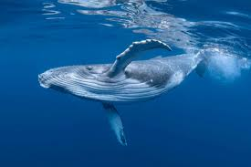
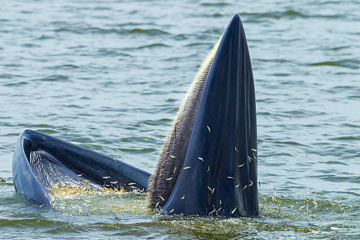

Galería de Fotos


Video Educativo
¿Sabías que...?
Las ballenas azules pueden llegar a medir más de 30 metros y pesar hasta 180 toneladas. Su corazón es del tamaño de un automóvil y pueden comunicarse a través de sonidos que recorren grandes distancias en el océano.